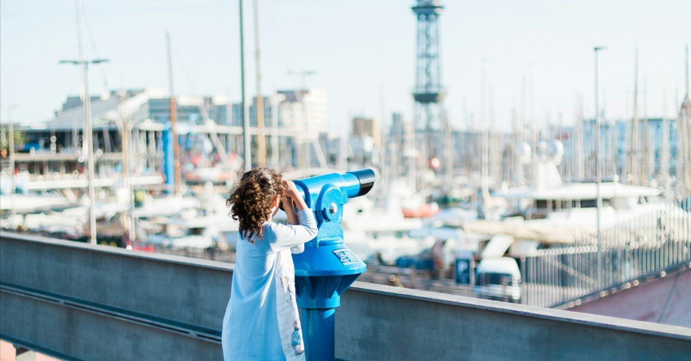

「諦めが悪い」の対義語として、「諦めがよくなった」という物の言い方は存在するのだろうか。
もしくは「往生際が悪い」の対極として、「去り際が美しい」。もしそのような相反関係が成り立つとしたら、僕の近況は実に諦めがよくなったし、手前味噌ではあるが去り際も美しい方なのかもしれない。
最近、「諦める」という言葉が頭の中をぐるぐる回っている。
以前校正を勉強していたこともあり、私室の机上にちょうど広辞苑(第七版)が置いてあるので意味を引いてみる。
「仕方がないと断念したり、悪い状態を受け入れたりする」。
なるほど。確かにそうだ。非常に簡潔で、端的にその意味について記載されている。いつだって広辞苑はその仕事を完遂してくれるのだから、僕は常日頃から全幅の信頼を寄せている。
改めて辞書で意味など調べなくてもわかる。
そんな声が上がったような気がした。もちろん僕だってわかっていた。わかっていたつもりだった。
でも、日々の生活の中で頭にこびりついて離れない言葉だからこそ、昔から知っていたはずの意味すら見失っていたような気がしたのだ。行き詰まっているからなのか。または慢性的な脳の電池切れによる思考能力の低下か。真偽は未だにわからない。
「諦める」。
それは私的な人間関係であったり、仕事におけるコミュニケーションを僕の場合指しているのだが、最近は特にそうした場で自ら進んで考えや意見を述べたり、時には他者と議論する行為をほぼほぼ諦めてしまった。
傍からすると、思考が停止しているように見えるだろう。もしそんな人間を見かけたら、きっと僕もそう思う。でも、決して考えることを全部放棄したわけではない。他人の論調に付け足しておきたいこともあるし、誰かの要望に不快感なく意見したいと悩む毎日だ。でも、結局は実際に口にすることはなくなっていた。
法律や倫理観、常識から明らかに違反している場合は例外だが、そうでもない限りは基本的に「お望みのままに」といった姿勢なのだ。また、これはミーティングなどにおいて、相手の主張より適した内容を思い浮かべている場合であってもそうなのだから、実に救いようがない。
そうした態度の理由には「僕が言葉にしなくとも誰かが言ってくれるだろう」といった第三者依存な考えも内包されているけれど、それよりもなにより、他人に自分の考えた通りの意図で物事を伝える過程に多くの体力を削られるのを嫌っているからである。
以前は「あなたよりも僕の方が正しい」と主張することに惜しみない力を注いでいたが、相手の考え方がまるで違っていたりすると、100％伝わるまでの道のりが想像以上に遠くて途中で投げ出したくなり、いつしか声すら発さなくなっていた。
当時は何とか言葉を紡ぎ、ようやっと相手には伝わるものの、ある時「なんなんだ、この何ともいえない疲労感は……」といった、胸のうちにしまうだけの感情に気がついた。
お察しの通り、対人関係における僕の燃費はとてつもなく悪いし、つまるところ自身の思考をスムーズに誰かへ伝えることが苦手なのである。
思考の伝達を避ける理由にはこれ以外にも、心の中に渦巻くちゃっちい主義や適切だと思っているプランより、相手の意に沿った方が物事がうまくいくことも多々あるからだ。それに、自らの固定観念を捨て去ることで、がんじがらめになっていた物事の捉え方がひどくシンプルになることもある。これらはある種、諦めの副産物といえるかもしれない。
そんな僕のことを、たまに「心が広い」といった言い方で褒めてくれる人がいるが、まったくもってそんなことはない。むしろ自分では「なんて利己的で、嫌みな対話姿勢なんだ」と常日頃思っている。
「たとえ面倒だと感じても、コミュニケーションを重ねることが肝要である」。
そんなことは僕なんかに言われなくても全員がわかっているだろうが、自分に言い聞かせるためについ書いてしまった。
だから、それを実践し、これまでの自己に別れを告げて改心しようと努めても、そう簡単に人は変われない。もちろんそうした段階が必要ならば時間を割くことはいとわないが、誰かと積極的に意見を戦わせ、じっくりと内容を詰めていく過程は心身ともに擦り減るし、気づけばなるべくそうした場面を避けようと相も変わらず行動してしまっていた。
それに、これは昔からの悪しき習慣になっていたが、話し合いの中で何かしらの提案を受けた際には「いいですね！」や「ぜひそうしましょう！」といった類のことを調子よく口にしてきた。そんな人間の本質を見抜いてか、僕はこれまで出会った人たちの何人かに「このイエスマンが！」と、愛のある口調で言われてきた過去があるくらいだ。
仰る通りである。紛うことのないイエスマン。何か言われて「イエス」と返せば相手はいい顔をしてくれるのだから、つい口にしてしまう。イエスマンはとてつもなく楽なのだ。
でも、こんな僕でも表面上は「イエス」と言っても、腹の中では「ノー」を突きつけている時がある。実に肝の小さな男丸出しの発言だが、本当の気持ちを押し殺し表では正反対の口当たりのいい言葉を繰り返すことで、労力を温存しながら何とかこの世の中を渡ってきた。どうしようもない僕の数少ない処世術でもある。
もちろんイエスマンにもそれなりの苦労がある。原則、相手の要望に応える必要があるし、そのハードルが高ければ高いほどエネルギーも消耗する。いくら世渡りのためとはいえど、度が過ぎるとイエスマンのメッキが剥がれるわけだ。
……一体僕は何を語っているのだろうか。今回は別にそんな苦労話をしたいわけでもないのだから、話をもとに戻そうと思う。
こんな生粋のイエスマン男ではあるけれど、それを後押ししてしまった背景には前述したような、人に物事を伝達することへの苦手意識や相手に気持ちを伝えるための労力を惜しむことから起因する「諦め」がある。これは何もかも自業自得ではあるが、まさに冒頭の広辞苑にもあったように、今の僕は(少々きつい言い方になるが)「悪い状態を受け入れている」わけだ。
こんな日々が続けば、いつか追い詰められるのは目に見えているし、心のうちを見透かされて周囲の信頼すら失いかねない。悲惨な未来を迎えないためにも、まずは正直な気持ちを整理することから始めて、最終的には端的にそれを相手へ伝えられるようリハビリをしていきたい。それがきっと、今の僕に最も必要なステップなんだと思う。
そしてまさに現在、絶賛リハビリ中ではあるものの、習慣とは怖いもので気を抜くと何かにつけて諦めようとしてしまう。
まだまだ治療の余地ありだとは思うが、実は最近になって「諦め」にはもしかすると誰もが思い浮かべるものとは別の効用があるのではないか？と考え始めている。
例えば、仕事で上司に作業を任された時に「どれくらいで終わりそう？」と時折聞かれることがある。最初は早めにできた方がよさそうだと考え相手が期待しているだろう短めの時間を提示していた。しかし、見積もりの甘い僕の能力不足が所以で、その約束を何度か破ってしまったことがあり、それ以降はどう思われようが余裕を持った作業時間を申告するようになった。
そのたび上司に「そんなにかかるのか……」といった失望の顔をされてしまうが、期待通りの自分を演じるがために無理に作業効率を高めようとしてミスをしたら元も子もない。なによりこれ以上迷惑をかけないためにも正直に現状を報告することで、直接口には出さないものの「これが今の精一杯です」と暗に伝え僕への期待を諦めてもらう。
もちろん僕自身、相手の期待に応えたい気持ちを諦めているわけなので決して心地のよいものではないし、言い表し難いむなしさを伴うが、それでもその方が今後のためだと思っている。まさにこうした「諦め」こそ、相手への過度な迎合を避け、より正直な関係を築くための潤滑油のような働きをしてくれているのかもしれないと、鋭意リハビリ中の僕は考えているわけである。
「今はこんな状態だけど、ゆくゆくは期待に応えられるように努力します」。
これからは、そんなようなことも相手に伝わるよう言葉にするのが目標でもある。夢物語にならないよう、今は少しずつでも素直な想いを形にしていきたい。
ちなみに、仏教用語では「諦める」という言葉に「明らかに真実を観る」といった意味があるようだ。移ろいゆく物事の有り様を、偏見や前提、思い込みを交えることなくありのままに見たり知ったりする。そういった内容が含まれているらしい。
また、漢語の｢諦｣は「真理」や「道理」を表していて、「物事の道理をわきまえることで自らの願望が達成されない理由を明らかにし、納得して断念する」といった過程が踏まえられている。単に諦めることとは大きく異なり、真理がわかったうえで、納得して「諦める」という結論に至るわけだ。
広辞苑だけでは拾いきれなかった言葉の奥深さを思い知ったとともに、こうした発見は「諦めることも悪くないのかも」と思わせてくれる。そして、また一つ、世界の見方を会得したような気分にもなった。
ここまで書いてきて、最近「諦める」という言葉が頭の中をぐるぐると旋回していた理由がようやくわかってきたような気がする。
これまで僕のしてきた数々の「諦め」は、自身の前向きな気持ちを手放す寂しさに似ていた。それを日常的に繰り返してきたから心にダメージが蓄積されたわけだが、このnoteを書き思考を整理することで、それを断ち切る勇気を持てた。
他者とのコミュニケーション同様に、今後は自身の気持ちとも対話を重ね、いつしか傷だらけになっていた心も労わってあげたいと思う。それが真実をつまびらかにする「諦め」の第一歩になると信じて。
人は簡単には変われない。
先ほどそう書いた。確かにそうだ。実際、これからも僕は数えきれないほど何かを諦めるのだろう。でも、それは悪い意味での「諦め」ではないようにしたい。「真実を観る」ために諦めをつけて、日々を暮らしていきたい。
その真実がいつだって優しいとは限らないし、時には残酷な仕打ちをしてくることもあるだろうけど、定点観測のように、自らが打ってきた無数の諦点を観測していたら、いつの日かその点と点が繋がって思いもかけない景色が広がるかもしれない。
こればっかりはわからないが、それでも今は周りにいてくれる人たちと対話を続けていこうと思う。明日も明後日も、その先もずっと。そんな日々を振り返っていつか懐かしむことができたなら、きっと僕の人生は上々だ。